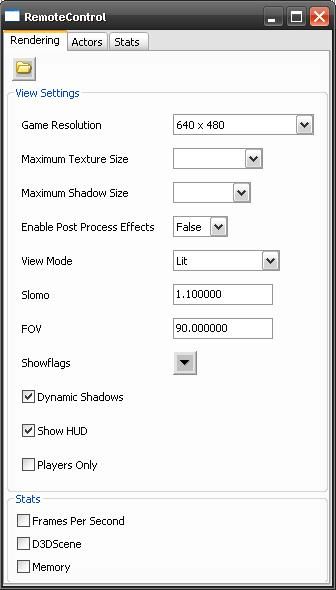
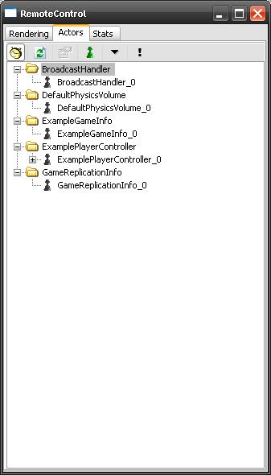

UDN
Search public documentation:
RemoteControlJP
English Translation
中国翻译
한국어
Interested in the Unreal Engine?
Visit the Unreal Technology site.
Looking for jobs and company info?
Check out the Epic games site.
Questions about support via UDN?
Contact the UDN Staff
中国翻译
한국어
Interested in the Unreal Engine?
Visit the Unreal Technology site.
Looking for jobs and company info?
Check out the Epic games site.
Questions about support via UDN?
Contact the UDN Staff
リモートコントロール機能
本書の概要: リモートコントロール機能に関する説明 本書の変更記録: RichardNalezynski により新規作成。概要
リモートコントロールは、レンダリング オプションの操作、アクタの検証およびリアルタイムの統計表示に利用できる新しい機能です。リモートコントロール
2007 年 4 月 QA 承認ビルド以前のデフォルト設定では、リモートコントロールはエディタ外でプレイセッション時に有効になっていました。 注意: 2007 年 4 月 QA 承認ビルド以降は、Epic 社の出荷ゲームと同様、ゲームの実行中は wxWidgets が使用されないように変更されています。これは、 _リモートコントロール_ ウィンドウとeditactor のサポートが得られないことになりますが、コマンドラインで -remotecontrol または -wxwindows を渡せば以前の動作を得ることができます。
レンダリング ページ
[Rendering] ページには、切り替えまたは値指定が可能な各種の設定および統計のリストがあります。 ツールバーにはレベルを開くためのアイコンがあります。
設定
Game Resolution (ゲーム解像度) - 標準またはフルスクリーンモードのセットから選択するか、またはカスタム解像度を作成しますMaximum Texture Size (最大テクスチャサイズ) - 32x32 から 4096x4096 の範囲で選択します
Maximum Shadow Size (最大シャドウサイズ) - 32x32 から 512x512 の範囲で選択します
Enable Post Process Effects (ポストプロセスエフェクトを有効にする) - True または False を選択します
View Mode (表示モード) - Wireframe (ワイヤーフレーム)、 BrushWireframe (ブラシワイヤーフレーム)、 Unlit (アンリット)、 _Lit (リット)、 LightingOnly (照明のみ)、 LightComplexity (ライトの複雑度)、 ShaderComplexity (シェーダーの複雑度) から選択します。
Slomo (スローモーション) - 値を設定します (1.0 が普通の速さ)
FOV - 値を設定します (通常 90.0)
Showflags (表示フラグ) - Bones (ボーン) 、 Bounds (バウンダリ)、 BSP 、 Collision (衝突)、 Constraints (コンストレイント)、 Decals (デカール)、 Decal Info (デカール情報)、 Fog (フォグ)、 Foliage (フォーリッジ)、 Hit Proxies (ヒットプロキシ)、 Level Coloration (レベルカラー)、 Mesh Edges (メッシュのエッジ)、 Missing Collision (衝突)、 Particles (パーティクル)、 Vertex Colors (頂点カラー)、 Scene Capture Portals (欠落している衝突)、 Shadow Frustums (シャドウ円錐台)、 Skeletal Meshes (骨格メッシュ)、 Skins (スキン)、 Sprites (スプライト)、 Static Meshes (静的メッシュ)、 Terrain (テレイン)、 Terrain Patches (テレイン パッチ)、 Constraints (コンストレイント) の表示/非表示をトグルして選択します。
Dynamic Shadows (動的シャドウ) - オンまたはオフに切り替えます
Show HUD (HUD を表示) -HUD の画面表示/非表示を切り替えます (UnrealUI シーンと異なります)
Players Only (プレーヤーのみ) - オンまたはオフに切り替えます
統計
Frames Per Second (フレームレート) - オンまたはオフに切り替えますD3D Scene (D3D シーン) - 現在未使用
Memory (メモリ) - オンまたはオフに切り替えます
Actor のページ
[Actors] ページには、現在のレベルにあるすべてのアクタのリストがあり、コントロールを使ってリストをフィルタすることができます。 ツールバーにあるアイコンを使い、動的アクタの表示/非表示、[Actor] リストの更新、選択したアクタのプロパティ表示、デバッグオプションのサブオブジェクトの表示、アクタツリーの自動展開、十字アイコンの下のアクタのプロパティ表示を行うことができます。
 アクタのプロパティを表示して作業するときには、選択したアクタをロック、プロパティをクリップボードにコピー、プロパティ (インライン編集オブジェクトを含む) をクリップボードに完全コピー、すべてのカテゴリーの展開/折りたたみ、というオプションを選択できます。
注意: PIE セッション実行中、レベルにアクタを追加した場合は、PIE プロパゲーションが有効になっていても、そのセッションでアクタは表示されません。新しいアクタを表示するには PIE セッションを再起動する必要があります。
アクタのプロパティを表示して作業するときには、選択したアクタをロック、プロパティをクリップボードにコピー、プロパティ (インライン編集オブジェクトを含む) をクリップボードに完全コピー、すべてのカテゴリーの展開/折りたたみ、というオプションを選択できます。
注意: PIE セッション実行中、レベルにアクタを追加した場合は、PIE プロパゲーションが有効になっていても、そのセッションでアクタは表示されません。新しいアクタを表示するには PIE セッションを再起動する必要があります。
Stats ページ
[Stats] ページには統計グループのツリーリストがあり、項目単位またはグループ単位で表示を切り替えるることができます。
グループ
Physics (物理) - ダイナミクス、イベントなどStreaming (ストリーミング) - ゲームおよびレンダリングスレッド、オーディオ、ロード時間など
Engine - フォーリッジ、テレイン、デカール、インプット、HUD、シャドウなど
FaceFX - モーフィング、マテリアル、ボーンのブレンドなど
Game (ゲーム) - アクタ、コンポーネント、スクリプト、Kismet、ガーベジコレクションなど
UI - シーン、ウィジェットなど
Audio (オーディオ) - コンポーネント、インスタンスなど
Anim (アニメーション) - アップデート、ブレンドなど
Particles (パーティクル)- スプライト、メッシュなど
BeamParticles (ビームパーティクル) - パーティクルのスポーン、レンダーなど
TrailParticles (トレイルパーティクル) - パーティクルのスポーン、レンダーなど
SceneUpdate (シーンのアップデート) - プリミティブ、ライトなど
Net (ネットワーク) - パケット、バンチ、静的オブジェクト参照、名前参照など
CharacterLighting (キャラクターのライティング) - 視認性、環境など
RHI - 三角形、ライン、プリミティブ
Octree (オクツリー) - 点/半径チェック、時間と数
SceneRendering (シーンレンダリング) - オクルージョン、シャドウ、ライトなど
Collision (衝突) - レベル、テレイン、BSP、静的メッシュ、アクタ、シングルライン/マルチラインチェック
DefaultStatGroup (デフォルト統計グループ) - ルート
StatSystem (統計システム) - フレーム単位でキャプチャ
Object (オブジェクト) - プロパティ、設定、ローカライズ、名前テーブルなど
Memory (メモリ) - バーチャルメモリ、物理メモリなど
Threading (スレッド関係) - レンダリング/ゲームスレッド
AsyncIO (非同期 IO) - 読取り数とサイズ (完了、取り消し、保留)
コンソール コマンド
リモートコントロールをトグルするには、コンソールにREMOTECONTROL もしくは RC を入力します。
注意: 2007 年 4 月 QA 承認ビルド以降は、=-remotecontrol= または -wxwindows を指定してゲーム実行ファイルを実行した場合のみ、これらのコンソール コマンドを使用することができます。PIE セッションからはこれらのコマンドを常に利用できます。
コマンドラインからゲームの実行ファイルを呼び出し時に、リモートコントロールを抑止するには、 -norc または = -noremotecontrol= を指定してください。